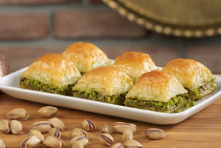

Ataief

L'Ataief est une spécialité culinaire égyptienne composée de pâte farcie de noix ou d'amandes qui est ensuite frite et trempée dans du sirop.
L'Ataief est une spécialité culinaire égyptienne composée de pâte farcie de noix ou d'amandes qui est ensuite frite et trempée dans du sirop.

Le baba ganousch est un plat à base d'aubergines qui sont préparées en mousse puis mélangées à du tahini et aux ingrédients de base de la cuisine moyen-orientale(ail, citron, huilde d'olive).

Le baklava est un dessert qui provient de plusieurs anciens empires comme les perses ou les ottomans et il se trouve également dans les pays d'Afrique du nord comme l'Égypte et il se fait à base de pâte phyllo, de sirop de sucre et de noix.